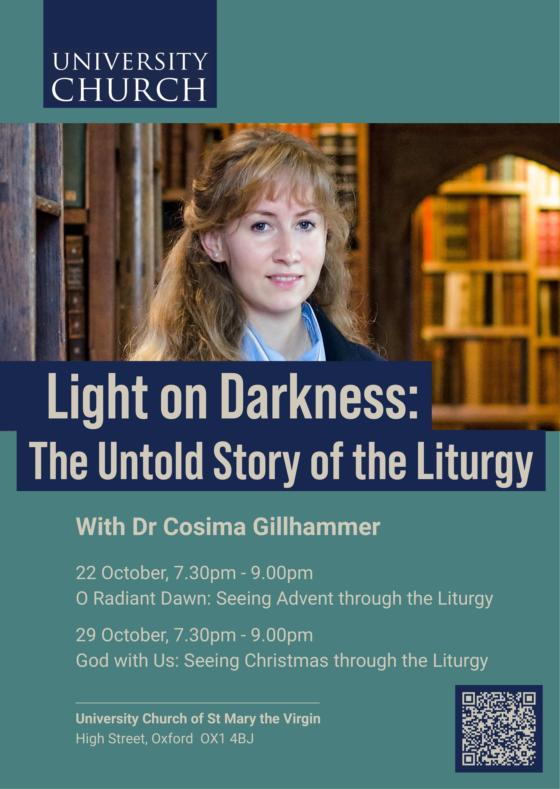

What's On
Liturgy-related lectures, conferences and events taking place in and around Oxford. If you would like to advertise an event on this page, please get in touch via the contact page.
Thursdays 22 & 29 October 2026 · 7.30 pm – 9.00 pm
Lecture SeriesLight on Darkness: The Untold Story of the Liturgy
Dr Cosima Gillhammer
One of the great characteristics of Anglican worship is its liturgical worship, drawing on The Book of Common Prayer and Common Worship. This term, the University Church welcomes Dr Cosima Gillhammer, the author of Light on Darkness: The Untold Story of the Liturgy, to help us think about the way in which ritual and music shape our experience and understanding of the world.
O Radiant Dawn: Seeing Advent through the Liturgy
Thursday 22 October · 7.30 pm – 9.00 pm · Old Library
What does Advent really mean? To understand this season of waiting and expectation, we need to return to its ancient liturgy. Exploring the extraordinary texts and rituals of Advent, this talk reveals a world of prophecy, longing, darkness and approaching light, and traces the influence of this liturgy through music, art, and literature, from William Byrd to J.R.R. Tolkien.
God with Us: Seeing Christmas through the Liturgy
Thursday 29 October · 7.30 pm – 9.00 pm · Old Library
Christmas is so familiar that its richness and deeper meanings can easily become obscured. This talk focuses on the liturgy at the heart of the feast, exploring how its texts and rituals illuminate the mystery of the Nativity — and how this medieval liturgical tradition has shaped centuries of Western art, music, literature, and culture.
Venue: The Old Library, University Church of St Mary the Virgin, High Street, Oxford OX1 4BJ
Both lectures are free, but tickets must be reserved via Eventbrite.
Reserve your tickets on Eventbrite →
Enquiries: events@universitychurch.ox.ac.uk
